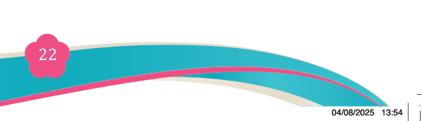
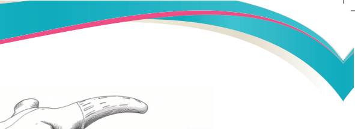
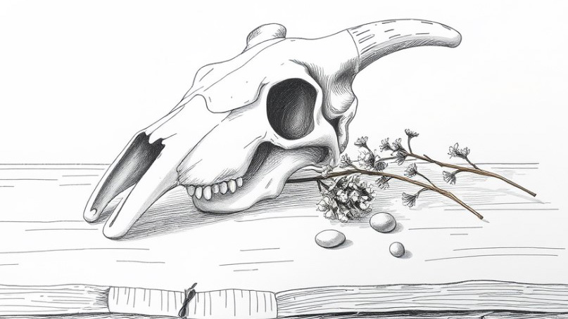
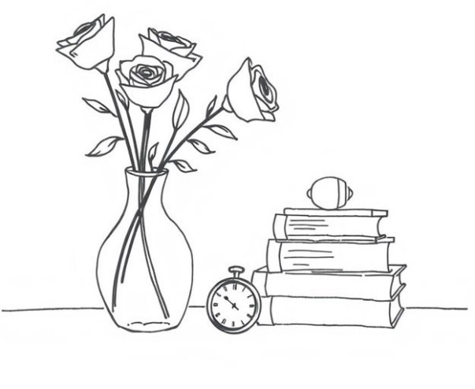
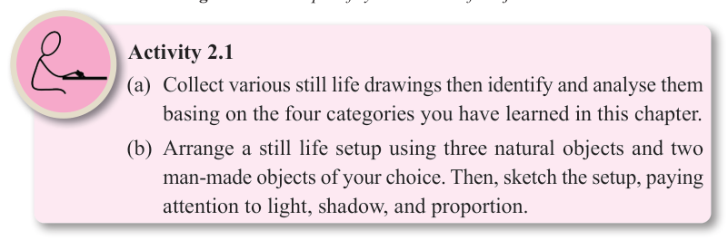

Figure 2.4: Still life, animal pieces category

(d) Symbolic still life
This category of still life involves creating symbolic meaning through the
composition of unrelated objects such as feathers, flowers, bones and cups of

tea. It uses other types of still life objects and most of the time their meanings are spiritual. Figure 2.5 is a good example of symbolic still life.

Figure 2.5: Example of symbolic still life objects

Activity 2.1
(a) Collect various still life drawings then identify and analyse them basing on the four categories you have learned in this chapter.
(b) Arrange a still life setup using three natural objects and two
man-made objects of your choice. Then, sketch the setup, paying
attention to light, shadow, and proportion.